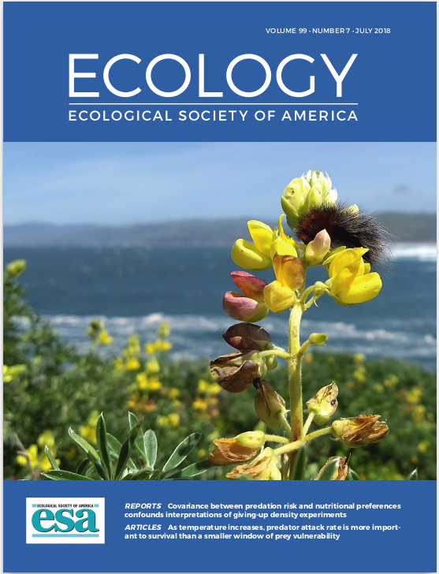

McMunn, M.‡ & A. Pepi. 2022. Predicted asymmetrical effects of warming on nocturnal and diurnal soil-dwelling ectotherms. American Naturalist,199: 00-00. PDF.
Pepi, A., & M. McMunn‡. 2021. Predator diversity and thermal niche complementarity attenuate indirect effects of warming on prey survival. American Naturalist,198: 33-43. http://dx.doi.org/10.1086/714590 PDF.
Pepi, A., M. Holyoak & R. Karban. 2021. Altered precipitation dynamics lead to a shift in herbivore dynamical regime. Ecology Letters,00:1-8. https://doi.org/10.1111/ele.13756 PDF.
Pan, V.,* A. Pepi, J. Goidell & R. Karban. 2021. Retention of green leaves not brown leaves increases spring cynipid diversity on large Valley Oaks. Arthropod-Plant Interactions. https://doi.org/10.1007/s11829-021-09815-7
Pepi, A. & R. Karban. 2021. Effects of experimental watering but not warming on herbivory vary across a gradient of precipitation. Ecology & Evolution, 00:1-8. https://doi.org/10.1002/ece3.7197 PDF.
Karban, R., E. LoPresti‡, A. Pepi & P. Grof-Tisza‡. 2019. Induction of the sticky plant defense syndrome in wild tobacco. Ecology, 100:e02746. https://doi.org/10.1002/ecy.2746 PDF.
Grof-Tisza, P.‡, A. Pepi., M. Holyoak & R. Karban. 2019. Precipitation-dependent source-sink dynamics in a spatially structured population of an outbreaking caterpillar. Landscape Ecology, 34:1131-1143. https://doi.org/10.1007/s10980-019-00793-z PDF.
Grof-Tisza, P.‡, & A. Pepi. 2019. Cannibalism of pupae by caterpillars of the Ranchman’s tiger moth, Arctia virginalis, (Lepidoptera: Erebidae). American Midland Naturalist, 181:139-142. https://doi.org/10.1674/0003-0031-181.1.139 PDF.
Vindstad, O. P.‡, J. Jepsen, M. Ek†, A. Pepi & R. Ims. 2018. Can novel pest outbreaks drive ecosystem transitions in northern-boreal birch forest? Journal of Ecology, 107: 1141-1153. https://doi.org/10.1111/1365-2745.13093 PDF.

Pepi, A., P. Grof-Tisza‡, M. Holyoak & R. Karban. 2018. As temperature increases, predator attack rate is more important to survival than a smaller window of prey vulnerability. Ecology, 99:1584-1590. https://doi.org/10.1002/ecy.2356 PDF.
Pepi, A., O.P.L Vindstad‡, M. Ek† & J. Jepsen. 2017. Elevationally biased avian predation as a contributor to altitudinal distribution of eruptive geometrids in sub-arctic mountain birch forest. Ecological Entomology,42:430-448. https://doi.org/10.1111/een.12400 PDF.
Pepi, A., H. Broadley† & J. Elkinton. 2016. Density-dependent effects of larval dispersal mediated by host plant quality on populations of an invasive insect. Oecologia 182:499-509. Erratum 185:533-535. https://doi.org/10.1007/s00442-016-3689-z PDF.
Preprints:
Pepi, A., V. Pan* & R. Karban. Influence of delayed density and ultraviolet radiation on caterpillar granulovirus infection and mortality. bioRxiv: https://doi.org/10.1101/2021.03.22.436482
Pepi, A., T. Hayes† & K. Lyberger‡. Thermal asymmetries influence effects of warming on stage and size-dependent predator-prey interactions. bioRxiv: https://doi.org/10.1101/2021.12.03.470870
Pepi, A., P. Grof-Tisza‡, M. Holyoak & R. Karban. Hilltopping influences spatial dynamics of a patchy population of tiger moths. bioRxiv: https://doi.org/10.1101/2021.12.17.473236
*– Undergraduate coauthor; † – Graduate student coauthor; ‡ – Postdoctoral coauthor.